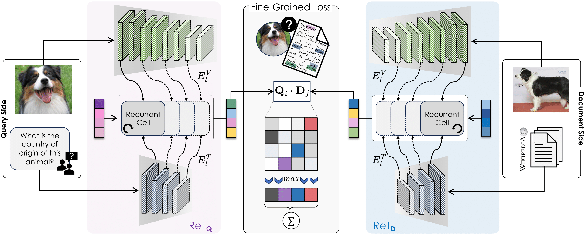
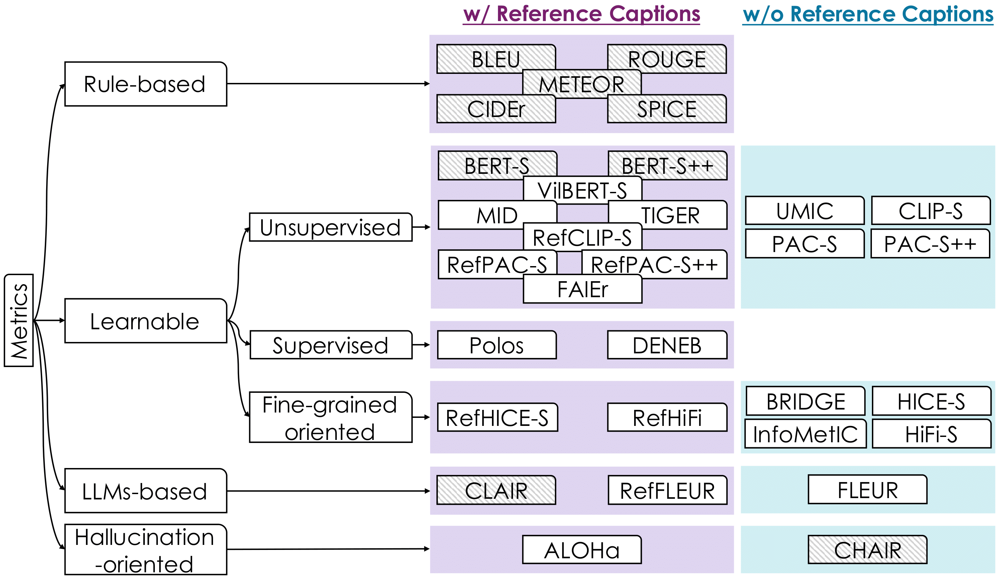
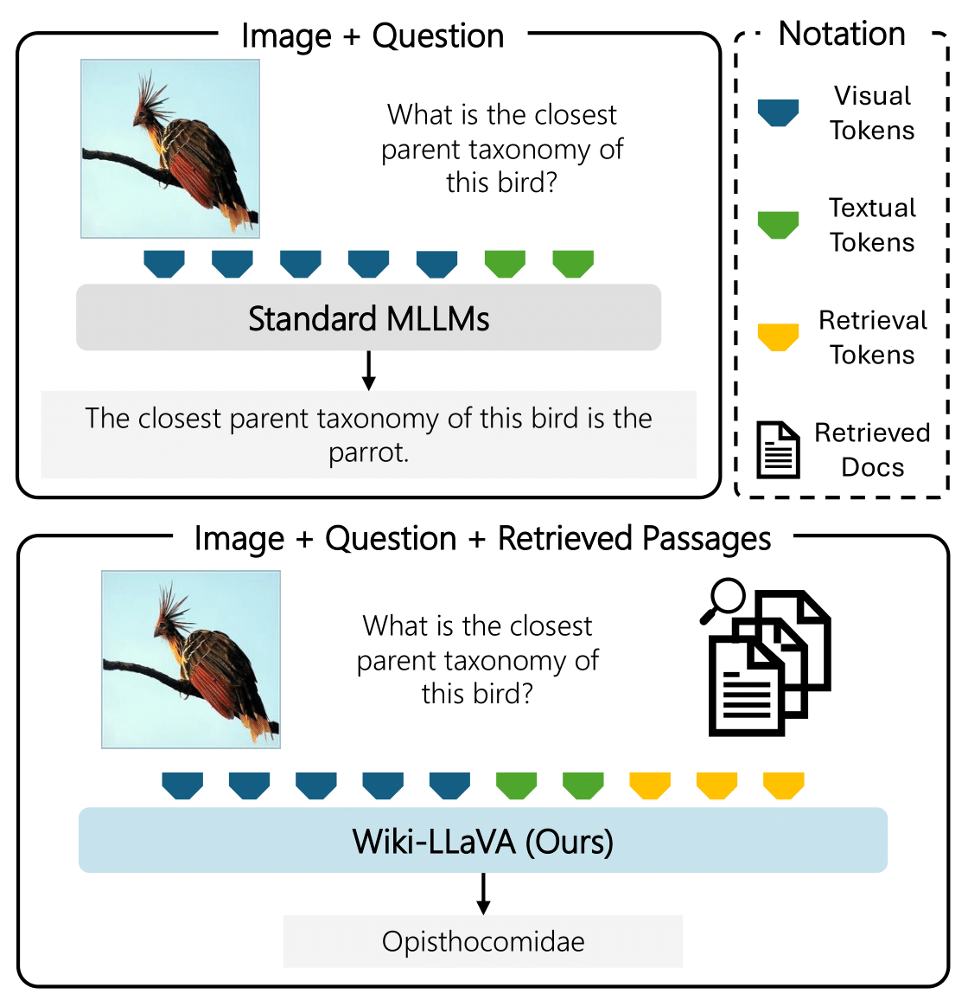
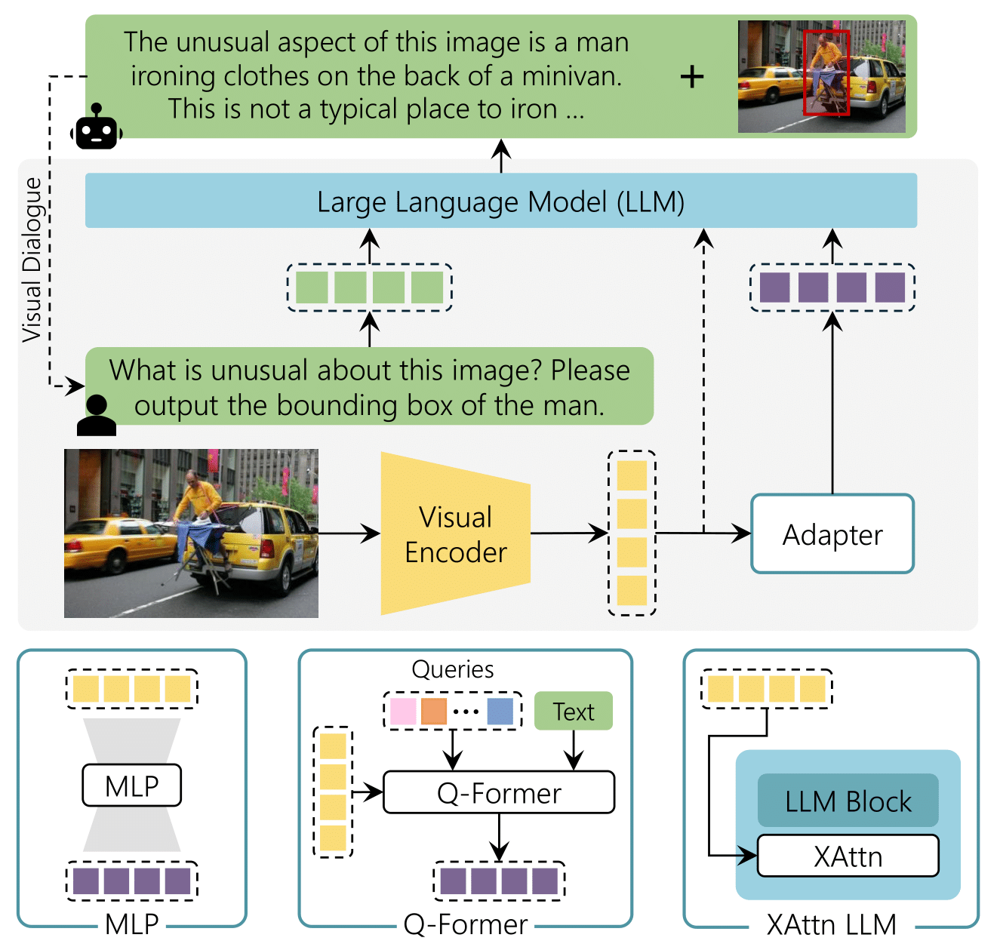
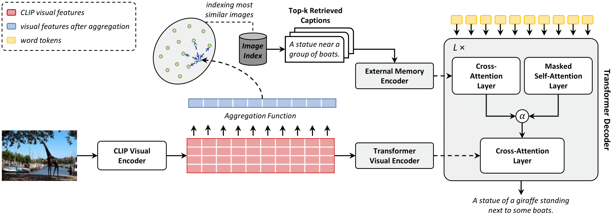

Selected Publications

An approach enabling multimodal queries — image + text — to search multimodal document collections through a novel Transformer-based recurrent cell integrating textual and visual features across layers.

A new family of MLLMs integrating modern language models with diverse visual backbones.

An overview of image captioning evaluation, discussing metric evolution, limitations, challenges from longer MLLM captions, and metric adaptability.

Integration of external document knowledge into an MLLM through hierarchical retrieval.

A comprehensive review of recent visual-based MLLMs, analyzing architectures, alignment strategies, and training techniques.

An image captioning approach with a kNN memory, with retrieval from an external corpus to aid the generation process.